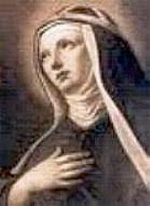
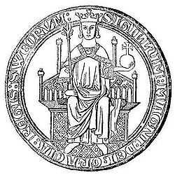
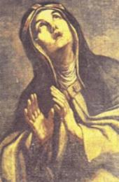
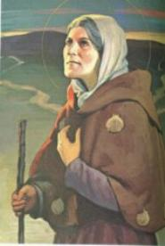

UMA ALMA ESCOLHIDA
NASCIMENTO E INFÂNCIA
Brígida nasceu em 1302 no
Castelo de Finsta em Norrtälje, na Província de Uppsala, na Suécia. Seu pai,
Birger 
Brígida Bengtsdotter até a idade dos 3 anos não dizia qualquer palavra, os pais e parentes chegaram a imaginar que ela fosse muda. Todavia, sem qualquer intervenção, completada a idade de 3 anos, ela começou a falar normalmente e com pleno desembaraço. Com a idade de sete anos, teve uma visão de NOSSA SENHORA que lhe sorriu e colocou a sua preciosa coroa na cabeça dela, e depois desapareceu. Aos dez anos de idade, depois de ouvir um sermão na Igreja local, quando o Padre falou sobre a Paixão e Morte de NOSSO SENHOR, ficou muito impressionada com as crueldades e os terríveis sofrimentos de JESUS. Dias após teve uma Visão de CRISTO pregado a Cruz, coberto de chagas, e o SENHOR lhe disse estas palavras: ?Olha em que estado ME encontro, minha filha? . Ela perguntou: ?JESUS quem TE fez isto?? NOSSO SENHOR respondeu: ?Aqueles que ME ofendem e não querem o MEU Amor?. Essa Visão deixou uma profunda e indelével marca em seu coração, e desde então, decidiu colocar a Paixão de CRISTO como o centro de sua vida espiritual.
Ficou órfã de mãe quando tinha apenas 10 anos de idade. A senhora Ingeborg foi colhida por um mal que ocasionou o seu falecimento em 1315. Seu pai, se considerando incapaz de prover uma educação compatível para uma menina de sua condição social, a enviou à casa da cunhada Catarina Bengtsdotter, em Aspanäs, próximo ao lago Sommen, em Östergötland.
CASAMENTO E FAMÍLIA
Como era costume naquela época, antes de completar os quatorze anos de idade, seu pai e os parentes arranjaram o casamento dela com Ulf Ulväsa Gudmarsson, Príncipe de Närke (Nércia), contra a sua vontade pessoal, porque ainda não tinha incluído o matrimônio em seus planos. Mas realizada a cerimônia, viveu feliz com seu esposo durante vinte e oito anos, e com quem teve oito filhos, sendo quatro homens e quatro mulheres. Dois meninos morreram muito jovens, sendo um deles, o mais moço chamado Gudmaro, a quem ela cuidava com muita atenção; Carlos (Karl) era o mais velho, e era mundano, gostava de muitas festas e não frequentava a Igreja, contudo respeitava NOSSA SENHORA; Bingério (Birger), o quarto homem, apesar de estar casado, mais tarde tornou-se companheiro de sua mãe e inclusive a transportou de Roma para a Suécia, quando ela faleceu. Três das meninas eram casadas, Merita e Cecília permaneceram na sociedade sueca, enquanto Catarina perdendo o marido, passou a viver com sua mãe. Esta moça com o passar dos anos, revelou virtudes excepcionais e notável caráter, desabrochando um imenso amor a DEUS, se dedicando a oração e ao serviço dos pobres e necessitados, santificando sua existência de uma maneira tão admirável, que assumiu na continuidade a obra de sua mãe. Ela foi canonizada e é venerada com o nome de Santa Catarina da Suécia. A quarta menina, Ingeborg, tornou-se freira na Ordem de Cister.
A Santa teve dificuldades com sua família, sua filha mais velha se casou com um homem sem escrúpulos, a quem ela mesma considerava um verdadeiro ?Bandoleiro?, porque além de espertalhão e golpista, era extremamente volúvel, egoísta e orgulhoso.
Brígida era uma mulher de oração, não deixava passar uma oportunidade para rezar e permanecer num fervoroso contato com DEUS. Quando o marido estava ausente, porque era membro do Conselho do Rei da Suécia e constantemente viajava, ela passava a noite em vigília de oração, rezando fervorosamente e praticando severas disciplinas, como maneira de consolar o SENHOR por causa dos pecados do mundo. Ela sempre rezava pela conversão dos pecadores e para as almas que estavam no Purgatório, principalmente aquelas mais esquecidas e mais necessitadas.
PEREGRINAÇÕES E FALECIMENTO DO ESPOSO
A devoção de Brígida era tão profunda e consciente que influenciou muito o seu marido. E assim, estimulados pelo interesse em conhecer acontecimentos importantes ligados a religião, como maneira de agradar a DEUS, fizeram diversas viagens. Entre outras, o casal realizou peregrinações a Nídaros (atual Trondheim) no Reino Unido e a Santiago de Compostela na Espanha. Depois de terem visitado todos os lugares de interesse na Espanha, a caminho de volta para a Suécia, na cidade francesa de Arras, perto de Flandres, seu marido Ulf adoeceu com risco de morte. Ela rezou muito e pediu a proteção do SENHOR. Teve que permanecer um longo tempo nesta cidade, porque a enfermidade foi cruel e o enfraqueceu bastante. Durante suas perseverantes orações, o santo francês São Dionísio lhe apareceu e lhe confidenciou que seu marido não morreria nessa ocasião. Na verdade, nos dias seguintes, ele começou apresentar melhoras e recobrou a saúde, e por isso, ambos se comprometeram de comum acordo, se consagrarem a DEUS na vida religiosa.
De volta a Suécia, Brígida e o marido se estabeleceram numa pequena casa próxima ao Mosteiro Cisterciense de Alvastra. Ulf com a saúde recuperada, pode continuar o trabalho na Província de Närke até o início do ano 1344, quando novamente acometido de terrível moléstia ficou muito doente e Brígida o levou para o Mosteiro a fim de ter a ajuda dos monges, mas ele não resistiu e veio a falecer. E assim, eles não tiveram tempo de colocar em prática o propósito que os dois, marido e esposa, tinham feito de dedicarem as suas vidas a DEUS. Ela permaneceu morando ali, naquela casa perto do Mosteiro, onde passava longas horas em orações, suplicando ao SENHOR pela cura de seu esposo. Naquela mesma casa, ainda permaneceu durante quatro anos, essencialmente dedicada à penitência e à oração.
VISÕES E REVELAÇÕES DIVINAS
A Santa teve visões e revelações notáveis, que eram ensinamentos do SENHOR e também instruções que se referiam aos assuntos mais polêmicos de sua época, que sem dúvida, muitos estudiosos reconhecem que foram em consequência dessas visões, que a Monarquia Sueca obteve alguns importantes acordos de paz e estabeleceu relações políticas com diversos países, dentre outros acontecimentos.

Após a morte de seu esposo Ulf, repartiu os seus bens entre os herdeiros e os pobres, passando a viver de maneira simples nas imediações do convento de Alvastra. Nessa época, suas visões se tornaram mais numerosas e frequentes, constituindo-se na grande parte dos fatos que Brígida escreveu em suas Revelações, até a sua partida para Roma. E foi justamente durante as Visões que ela recebeu a missão de levar mensagens aos políticos e líderes religiosos, tendo nesta oportunidade, dialogado com santos e pessoas falecidas, que lhe esclareceram a natureza e o conteúdo de muitas dificuldades.
A partir do ano 1345, as revelações divinas não eram feitas mais através de sonhos, mas sim quando ela estava desperta e em oração, com o domínio completo da razão, e muitas vezes ela ficava em êxtase, recebendo as visões ou uma iluminação Divina em seu intelecto, pois via e ouvia as coisas espirituais e as sentia no seu espírito. Muitas vezes, na verdade, o movimento em seu coração era tão veemente e intenso, que até podia ser presenciado e sentido exteriormente, pelo aspecto de suas feições e de suas manifestações.
JESUS lhe disse certa vez:?Brígida, TE falo não somente a ti, mas também a todos os cristãos. Tu serás Minha esposa... E por meio de ti falarei ao mundo. Meu ESPÍRITO permanecerá em ti até a sua morte?.
Neste período, decidiu dar um rumo religioso a sua existência, apesar da constante oposição da corte que utilizava os seus serviços. E também porque ela era a primeira na fila à sucessão real, indicada a tornar-se Princesa. Mas com habilidade e inspiração Divina, conseguiu se livrar daquele compromisso e se dedicou exclusivamente a realizar a Vontade do SENHOR.
Desde então abandonou as suas vestimentas luxuosas, usando apenas uma túnica de linho e véu na cabeça, com uma corda na cintura. As visões se tornaram tão frequentes que a Santa foi até envolvida momentaneamente por uma dúvida, chegando a questionar se realmente se tratava de visões provenientes da graça de DEUS. Por obediência a JESUS, que lhe apareceu por três vezes, aceitou ser colocada sob a direção do Mestre Matias, que foi o seu primeiro confessor. Ele era um canônico sábio, respeitado teólogo e muito experimentado nas coisas da época. Todavia, no inicio das grandes revelações, ela foi aconselhada pelo próprio Matias a permanecer no Mosteiro dos monges de Cister, Mosteiro de Santa Maria, na Diocese de Linköping. Embora fosse uma entidade religiosa para monges, pelos desígnios de DEUS, ela foi recebida e alojada numa área, para a maior honra e glória do SENHOR.
Santa Brígida estava rezando, quando lhe apareceu JESUS e lhe disse: ?De minha parte a envio ao Padre Pedro Skninge, prior do Mosteiro de Santa Maria. EU sou como o Senhor cujos filhos estavam mantidos em cativeiro, o qual enviou seus mensageiros para libertar os seus filhos e advertir os demais a fim de que não caíssem nas mãos dos inimigos, a quem julgavam serem amigos. Do mesmo modo EU, DEUS, tenho muitos filhos, isto é, muitos cristãos, os quais estão submissos por pesadíssimos laços ao demônio. Assim pois, por Meu Amor lhes envio as Minhas Palavras que falo por meio de uma mulher (Santa Brígida). Ouve-as, Padre Pedro, e escreve em língua latina o texto que é de minha parte, e por cada letra dar-te-ei não ouro ou prata, senão um tesouro que não envelhece?.
De imediato Santa Brígida descreveu a revelação ao Padre Pedro. Mas ele não acreditou, e querendo deliberar a cerca do assunto, ficou à tarde na Igreja lutando consigo mesmo, com os seus pensamentos, e acabou por decidir não aceitar o cargo e nem escrever as revelações Divinas, julgando-se indigno para fazê-lo, e também duvidando das palavras de Brígida, se seriam verdadeiras ou ilusões produzidas pelo demônio. A resposta Divina não se fez esperar: ele recebeu tal golpe que caiu ao chão e ficou como morto, privado de seus sentidos e das forças do corpo, apenas ouvia e conservava o seu entendimento, estava lúcido.
Os monges o encontrando
ali estendido no solo o levaram para a sua cela e o colocaram na cama,
onde permaneceu 
Posteriormente o Prior também disse ter ouvido de Santa Brígida, que em outra revelação, JESUS lhe havia dito o seguinte: ?EU o golpeei porque ele não queria obedecer, e depois EU o curei, porque sou Médico e sarei Tobias e o Rei de Israel. Diga-lhe, pois: Anda e realize a obra dos escritos de minhas palavras, e escreve que te darei por ajuda um mestre em Minha Lei; e tens de saber com certeza, que quero fazer esta obra por meio de Minhas palavras que tu escreverás pela boca desta mulher. O texto humilhará a poderosos e emudecerá os sábios. E não penses e nem imagine, que as palavras que esta mulher lhe transmitirá procedam do espírito maligno. Não, são as Minhas próprias palavras, porque o que lhe direi será provado com obras?.
Em seguida, o Prior começou a escrever e traduzir todas as revelações e visões Divinas que Santa Brígida tinha, conforme ela lhe dizia. E dessa forma, continuou a acompanhá-la e dar-lhe assistência por ordem de JESUS, sendo o seu confessor, escrevendo as revelações por um espaço de trinta anos até o falecimento da Santa.
Durante o trabalho de escrever os textos e traduzi-los para o latim, Padre Pedro que padecia desde a sua infância, de dores muito fortes na cabeça, rogou a santa Brígida, que na ocasião se achava hospedada no Mosteiro de Alvastro, que suplicasse a DEUS por ele. A Santa em oração, pediu a JESUS que lhe apareceu e disse: ?Vai e diga a Frei Pedro, que ele já está livre da dor de cabeça. Escreva, pois, decididamente os livros de Minhas palavras que lhe são encaminhadas, para que sejam divulgadas para o mundo?. E desde aquele dia até trinta anos depois, ele não voltou a sentir nenhuma dor de cabeça, foi integralmente curado pelo SENHOR.
Posteriormente por orientação Divina recebida por Santa Brígida, o Prior fez um exorcismo numa mulher endemoninhada de Timor Gothland, usando exatamente as palavras que CRISTO instruiu. Estavam presentes duas testemunhas que viram a mulher ficar totalmente livre da posse de satanás e seguir a sua vida com normalidade.
Nesta época o SENHOR ordenou a Santa que fosse ao Rei Magnus e lhe comunicasse que deveria se corrigir com um comportamento mais digno e compatível com o posto de Rei que ocupava, pois sua conduta estava sob o juízo Divino. Magnus aceitou a crítica e se converteu. Mais tarde deu pleno apoio ao Mosteiro fundado pela Santa em Vadstena.
Brígida exerceu uma notável atividade de escritora, visionária e mística, descrevendo minuciosamente as suas revelações e as visões Divinas, com uma escrita objetiva e clara, que se tornaram muito populares na Idade Média. Mais tarde, estando em Roma, seguindo a orientação do SENHOR, à medida que recebia os avisos, pela grandeza de seu conteúdo esclarecedor e pacificador, os encaminhava ao conhecimento do Papa Urbano V, que colocava o assunto em execução.
Através de suas perseverantes e fervorosas orações, foi em vida, intercessora junto a DEUS, conseguindo uma quantidade impressionante de milagres e orientações do SENHOR, em benefício de muitas pessoas, até do Papa e do Rei da Suécia.
Também, pela intervenção da VIRGEM MARIA que lhe apareceu junto com JESUS, a Santa converteu uma prostituta, que se afastou definitivamente da perdição e se isolou numa existência dedicada a penitência e a caridade, pagando a Justiça Divina o tributo por todos os seus pecados.
Durante as suas orações, a noiva de CRISTO foi diversas vezes tentada, mesmo com pensamentos impuros. A bem-aventurada VIRGEM MARIA lhe apareceu e disse: "O diabo é como um espião invejoso, buscando denunciar e impedir tudo que é bom. Portanto, procure orar e reagir mentalmente, enquanto está sendo tentada, porque o seu desejo e seu esforço contarão para você como uma oração, e se não consegue expulsar de sua mente os assuntos sórdidos, o seu esforço para neutralizá-los contarão como mérito, desde que você não concorda com eles e que os maus pensamentos são contra a sua vontade".
NOSSO SENHOR JESUS CRISTO, uma vez falou a Brígida: "Vá a Roma, onde as ruas são pavimentadas com ouro e o sangue vermelho dos Santos e onde existe um compêndio - ou seja, um caminho mais curto - para o Céu, por causa das indulgências que os Santos Pontífices têm merecido por suas orações. Além disso, você deverá permanecer em Roma, até encontrar o Sumo Pontífice e o Imperador, e para eles deverá anunciar as minhas palavras".

Do mesmo modo que muitos Bem-aventurados, ela praticou e exercitou com frequência severas disciplinas, como forma de penitência para consolo e desagravo do SENHOR, em face dos pecados da humanidade. Até para dormir, ela que possuía uma cama confortável com um colchão bem macio, deixava-os de lado, estendia uma colcha no chão e deitava com a cabeça num modesto travesseiro, sem qualquer coberta, mesmo naquele frio intenso do inverno sueco. Quando os filhos ou parentes comentavam o fato, ela dizia que o calor de seu coração apaixonado por DEUS, aquecia todos os seus membros e ela não sentia frio em seu corpo.
Um dos aspectos mais conhecidos da vida de Santa Brígida são as muitas visões com que o SENHOR JESUS lhe favoreceu, especialmente as que se referem aos sofrimentos de Sua Paixão e a certos acontecimentos de sua época. Ela tinha grande desejo de saber quantas marcas de açoites e ferimentos ficaram no Corpo de NOSSO SENHOR JESUS CRISTO na Sua abominável e cruel Paixão. Um dia JESUS lhe apareceu e disse: ?Recebi em Meu Corpo, cinco mil, quatrocentos e oitenta ferimentos. Se queres honrá-los em verdade, reze 15 PAI NOSSO e 15 AVE MARIA diariamente, durante um ano. Ao terminar, tereis venerado cada uma das Minhas Chagas?.